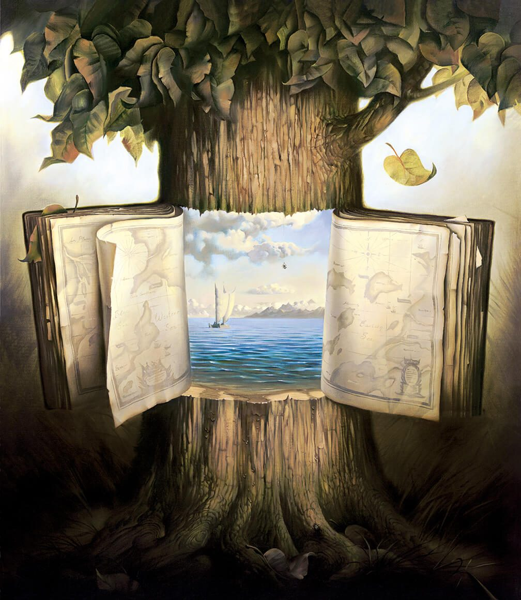

Writing / Philosophy · translation
Beyond the horizon and beyond: from a metaphysical perspective

We feed, protect, and cultivate animals, and in the end, we slaughter them. Yes, we slaughter them, and then we nourish ourselves. Let’s take a moment to reflect on this! To live, we end another life. Do not assume this is our natural right. The Qur’an reminds us that certain types of meat are permitted for us to consume. God has made it lawful (halal) to eat certain meats. Can we understand the significance of this?
It means that the meat of specific animals has been made permissible for us, whereas it could have been prohibited. If it were forbidden, consider the significance and blessing of it being allowed. Reflect on this deeply. Ending the life of an animal is a great power — should we take it for granted? Many cultures live without eating meat, implying that it is not essential for life or survival.
It feels natural to us because we have grown accustomed to it since childhood. But based on this reasoning, we cannot claim that slaughtering animals is our natural right. If it were, the Holy Book would not emphasize it. It does not say the same about drinking water or eating bread, yet it specifically mentions meat.
Therefore, we should not consider this as our inherent right, but as a gift from the Creator-God. This is such a great blessing that, upon deep reflection, even the sacrifice of blood is permitted. Just think about the immense responsibility this places on us! All the gifts we enjoy — earth, mountains, rivers — are they truly for our benefit alone?
Every creature sacrifices more than it receives, sometimes even its entire existence. Can humanity be the only exception? How is this possible? As awareness and perception grow, so does our responsibility and duty. The greater the blessing, the greater the sacrifice required. Does the life of a lesser being have no value, while only human life matters?
The purpose of life, not life itself, is what matters. If plants and animals sacrifice their lives for humans, and if their purpose is this, why should we be an exception to this order? If we are wiser, more logical, and stronger, shouldn’t our responsibility and sacrifice be greater?
If we observe the world around us, we see that all things are subject to humanity. Imagine if all animals united against us — yet they do not have the power to do so. This power has been given only to humans, for the greatest sacrifice is expected from us. The Earth and the Sky have been entrusted to us so that we may show our sacrifice as stewards of goodness.
Man’s responsibility is immense. Not only does he have responsibility to living and non-living things, but most importantly, to the Creator who gave him these blessings. Does man truly deserve these gifts? This should be the central question for humanity.
Plants sacrifice their lives for animals, animals for humans — then the question is: Can humanity sacrifice itself to elevate civilization, as the Creator has entrusted us with this responsibility as Stewards?
Sezai Karakoç, “Beyond the Horizon and Beyond from a Metaphysical Perspective.”
Translated by Besir Zeneli, June 2016.